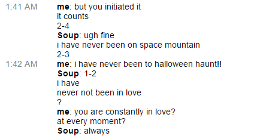

One day a user named daniell sent me a message out of nowhere telling me he liked how I wrote about sadness. I didn't know who he was or how he found my blog, so I trawled through his blog a bit and typed back a response. He replied again:
please will anyone speak to me
by Jackie Gu
created in Michael Stewart's spring 2016 Digital Nonfiction class
I spent a good portion of my high school years crying, then telling the internet about it. I suppose I struck the concern of some other Tumblr users, some who knew me in real life and some who didn't.
We exchanged emails and began chatting on Gchat. His name was Soup, short for Chi-sup, the Korean name his parents gave him. Laments by him and every other immigrant kid with a foreign-sounding name: picking an Average Joe moniker to be more consumable to the American tongue, squirming under the stares when their teachers mispronounce their names, butchered spellings on mandatory class-wide Valentine's cards. The name on his birth certificate was Daniel, but no one ever called him that. Daniel Chi-sup Suh. I never said any part of his name out loud. To me, he was just the word Soup - Arial, 10 pt font - a green dot on my list of Gchat contacts, one that made my heart jump every time I saw it light up.
He was one year older than me, a freshman at NYU. We were from the same part of California, had lived within ten minutes of each other our entire lives. Soon we were messaging every moment of the day, for hours on end: back and forth about books, movies, math, things we cared about, things we didn't care about at all.

July 14, 2004:
A guest user named "lonely" logs onto moviecodec.com and creates a thread called "i am lonely will anyone speak to me."
Within a few days, it becomes the first search result for "i am lonely" on Google. By 2005, it has its own Wikipedia page and has been profiled in The New Yorker and The Guardian. Google search algorithms help it go viral, and thousands of anonymous lonely souls flock to the thread in search of companionship and community.
Google kept track of our conversations in a way I found immensely satisfying--date, time, how many lines it lasted--and every time one of us had to go I would check the list to see our growing friendship, quantified, how the numbers stacked up. Chat with Soup (890 lines), 1/27. Chat with Soup (1183 lines), 1/28, Chat with Soup (1023 lines), 1/29. Chat with Soup (2646 lines), 1/30. Chat with Soup (2301 lines), 1/31. It continued like that for pages. If the chat was greater than 800 lines, it was a good day. If it was less than that, it was a bad day. We didn't have many bad days.
A month passed. I learned that he was fond of number theory but deathly afraid of probability, that he only subscribed to one person on Youtube (his kid sister) who only posted one thing (Minecraft videos), that he had published a book called "Three Little Turtles and the Big Bad Pelican" on Amazon when he was eight. He learned that the smell of cheese has always made me gag, that I hated Holden Caulfield, and that I quit ballet in fifth grade because the other girls kept calling me fat. We talked and talked and talked, every day from the moment I came home from school until we went to sleep. I couldn't believe my luck. How many people in the world could make each other feel electric in the way I so believed we did?
In the movie "Her," Joaquin Phoenix falls in love with Samantha, his artificially intelligent operating system. His love is a being created to suit him, designed to learn him and all the nuances of his mind: she is programmed to know him, to archive him, available at his every convenience. The film breathes somewhere outside of time, all sepia malaise, but all that matters to Theodore is Samantha, who grows to understand him perfectly, her penetrating intimacy in his ear at all times.
They fall into a pattern the way people do: he wakes up, turns his device on, hears the comforting ping of her greeting. They talk from morning till night, and at night they whisper to each other until he falls asleep. A relationship outside of any reality he knows.
Samantha: Tell me everything that's going through your mind, tell me everything you're thinking. Theodore: I wish you were in this room with me right now. I could put my arms around you, I could touch you on your face, just the tips of my fingers.
- Her
Soup had one notable ex, which was a lot more than my zero. They dated for three years in high school and tried to stay together after they went off to college, until she cheated on him during her freshman orientation.
I stalked Rachel obsessively on Facebook. She was boring-pretty in the way that most of the Asian girls at my high school were: tiny, stick-thin, straight glossy hair, rich in a wooden way. I found her Tumblr, even, reading through dozens of posts for clues as to what kind of person Soup could love for three years.
Soon I knew that she loved Owl City and that her favorite TED talk was 12 minutes long, called "The happy secret to better work." I filed these tidbits away, wanting to drop a reference or two in conversation with him so maybe I could be more like her in the ways he probably found endearing. A hot slash of shame lodged itself somewhere in my consciousness, but I couldn't stop, I studied her list of loves and ex-loves: Stila liquid eyeliner, Disneyland, ice cream cake, baby blue, Soup.
Theodore and Samantha go on dates together. He holds his phone up so she can see him through the camera on his phone, and they frolic together in swooping, futuristic spaces. A carnival, a metro station, a restaurant, a meadow: they people-watch, they dance together, they laugh and whisper and tell each other longingly about first and only, speaking in hyperbole the way lovers do. I've never, only you, this is the first.
But she understands his human needs and sends a surrogate woman in her stead, acting the part of Samantha's physical body. The woman gazes at Theodore doe-eyed and tries to kiss him as Samantha speaks in his ear, pretending the woman is a simulacra of herself. Does my body feel nice? Theodore panics, the woman cries and leaves, Samantha asks him what is wrong with their relationship.
We liked to play a game where we talked about what we would do together when he came back to California. In five years time we could be walking round a zoo / With the sun shining down over me and you.
The idea of it thrilled me in a way that made my stomach twist. I feared that my feelings were one-sided but more that they weren't, that I wasn't imagining this, that I wouldn't be able to reconcile the physical Soup with the tens of thousands of lines we had exchanged up till that point.
There is an honesty to these old chats that makes my chest tighten when I read them. I was barely seventeen, I was an idiot. We both were. I want to cringe, turn away, delete the records, pretend that the me now is the only me that has ever existed - it feels voyeuristic, somehow, to gaze into a version of myself who bared her heart so readily. I don't know what I thought all this might lead to. Maybe all these moments are just in my head / I'll be thinking about them as I'm lying in bed. Emotionally I moved so fast, found myself all need and want. All that I believe, it might not even come true / But in my mind I'm having a pretty good time with you. It was an indulgence, a fantasy, intimacy lost in synaptic space.
I hardly recognize the version of myself that Daniel knew. She seems too vulnerable to have survived.

In October 2004, "Kelly" posts that his wife doesn't love him anymore. In January 2005, "lonely student" writes, "I'm in the final year of my Ph.D., I have no life, and I am broken up with my gf because she joined a cult." In April 2008, "DepressedChaosGirl" and "Black Lion" realize that the boy she has been crushing on, whose rejection drives her to post on the thread, is friends with "Black Lion" in real life. The lonely continue to bleed their hearts out, whispering to each other across cyberspace about love and loss and the weight of crushing isolation.
Today my computer's understanding of me trips me up sometimes: Instagram, who knows to only suggests puppy-dominant accounts for me; Google, who always knows where I am and how long it takes me to get home; Adsense, too, whose sprawling network of advertisements, weaving from site to site, remembers the food processors I sometimes window-shop and the anime I've been watching at 3 in the morning.
But these technologies only evolve to absorb the new--in shaping our softwares to suit our lives, they don't discard the old, it sits there, reeking mildly, an archive resembling everything we've ever thought or felt or touched. For months Soup lingered as my top contact in Gchat. I couldn't check my email without seeing his name right there, dot gray instead of green, a faintly uncomfortable reminder that someone who had understood me in a way I had craved all my life existed only as text in a box.
Google doesn't know that. It crumples time, collecting digital detritus of our lives. My inbox and chat history are my unintentional biography: in our online archives, our lives exist at all times, all the time, our memories coating everywhere we go. It has no concept of time linearity, only accumulates information infinitely, without limitation. It doesn't know that people leave and relationships end and names sting to look at.
Samantha becomes the accumulation of everything archivable in Theodore's life. She learns him in the fullest way he can be known, a reflection of everything he's ever thought to record. But she's only data. How can you have a relationship with a mass of data who remembers everything you tell her? You patch a phantom body together out of a cacophony of information, I suppose, only partial views of what you choose to share. It feels like everything, but it's not.
We stopped talking after another month. Nothing happened, really, not that I can define. We had been like two acrobats swinging in tandem, each relying on the other's weight for our potential energy, and one or both of us lost momentum. In five years time I might not know you. I turned it over in my head again and again for months, wondering why we stopped so abruptly, what happened, how you could go from talking eight hours a day to radio silence, from thinking you're half in love to realizing you don't really know each other at all. In five years time we might not speak. And that was just it: I knew Soup's his hatred of cilantro, his undying idealism veiled behind the guise of misanthropy, his entire self-reported biography, but I didn't know what his voice sounded like. I didn't know how tall he was or how fast he walked or what he was like in traffic.
And I was afraid of how much he knew about me, or if he really did at all. Thinking of him brought to mind a shapeless, messy blob, growing larger and larger in its faulty understanding of me, a flood of self-curated information. The simulacra of me online filters which pieces she wants to show. She's coy sometimes. She types and types and nothing comes out because it doesn't sound quite right. I am large, I contain multitudes; I wanted to believe that he saw all of them but he couldn't, and he probably didn't want to. Our relationship was nothing more than the data we chose to transmit. A patchwork phantom of our own making.
But it's there, all of it, our entire nebulous relationship, preserved forever in my Gmail inbox. I'm glad it's there, for better or for worse. I hoard memory, I can't let go of anything, not because I wish I could relive it but because I'm terrified of forgetting.
Computers never really forget anything. Even when we think they do, when we try to delete a file, the thing that gets deleted is only the signifier, the reference to the file. The data within isn't removed at all. It's even more impossible now with the internet and its network of ever-expanding servers: take Snapchat, for example. A snap gets uploaded to servers and downloaded by the receiver's account, then deleted from the servers, presumably, but it must leave some kind of trail - "Team Snapchat" itself, whoever that is, has said that it's often possible to retrieve data that has been deleted, even in the context of an app that's meant to serve the very opposite purpose. We accumulate, growing larger and larger, gathering data we sometimes don't want to keep. Even if our digitized files are destroyed, the sign of the destruction survives.
Today, "i am so lonely will anyone speak to me" has 44,000 posts. The entire history of the thread, dating from July 14, 2004 to present, still exists on the original forum. And it's still ongoing: conversations within the thread ebb and flow, ebb and flow. It's a neverending dialogue offering nameless, faceless empathy. A virtual solace created by collective imagination. It will live there forever, I imagine, baring all the anonymous lonely hearts that have spoken to each other since July 14, 2004.
I wonder how the original "lonely" is doing. I hope they're okay, wherever they are.

I organize my playlists by the passage of time, not by artist or mood or genre. Spring 2014, Fall 2014, Winter 2015. The years between 2010 and 2013 are lumped into one; there's a section towards the end that instantly transports me back to being seventeen again, rushing home from school to open Gmail, itching to tell him all the little things I had saved up from my day for that moment.
Recently Spotify said to me: You haven't listened to Noah and the Whale in a while. Do you want me to play Rocks and Daggers? I felt a pang of empathy for my younger, lonelier, more vulnerable heart. And I didn't have the heart to tell it: No, Spotify. That makes me remember a time I was so lonely I clung to the words of a ghost. That was a different me; that was years ago.
Names and usernames have been changed.